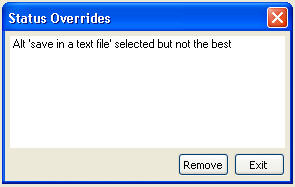

Find Status Overrides
The user can choose to override any of the items given in the Rationale Task
List. This will keep the error or warning from being displayed in the list or
indicated by an error or warning icon in the Rationale Explorer. The list of
overridden items can be shown by choosing “Find Status Overrides” in the
Rationale Query menu. The following figure shows the Status Overrides display. The user can
remove any override from this list and the Rationale Task List and Rationale
Explorer will be updated when they exit from the display.
